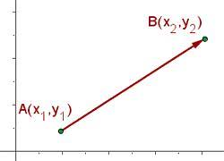
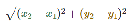
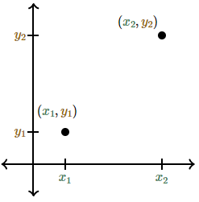
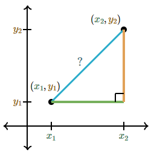

La distancia entre dos puntos no es más que la longitud del segmento de la recta que los conecta, el segmento de recta es el pedacito de recta de un punto a otro, puede ser de manera horizontal, vertical o oblicua (significa inclinada). Para conocer la distancia entre dos puntos se utilizará el teorema de Pitágoras que explica que: en todo triangulo rectángulo el cuadrado de la hipotenusa es igual a la suma de los cuadrados de los catetos.
La distancia entre dos puntos (x1, y1) y (x2, y2) esta dada por la siguiente operacion: 
la cual te enseñaremos a resolver para que aprendas a resolver a traves del teorema de pitagoras.
Primero hay que localizar los puntos (x1, y1) y (x2, y2) en la grafica.
La longitud que existe entre estos 2 puntos es igual a la distancia que existe entre ellos 2.
Si dibujamos un triangulo rectangulo podremos usar el teorema de Pitágoras.
